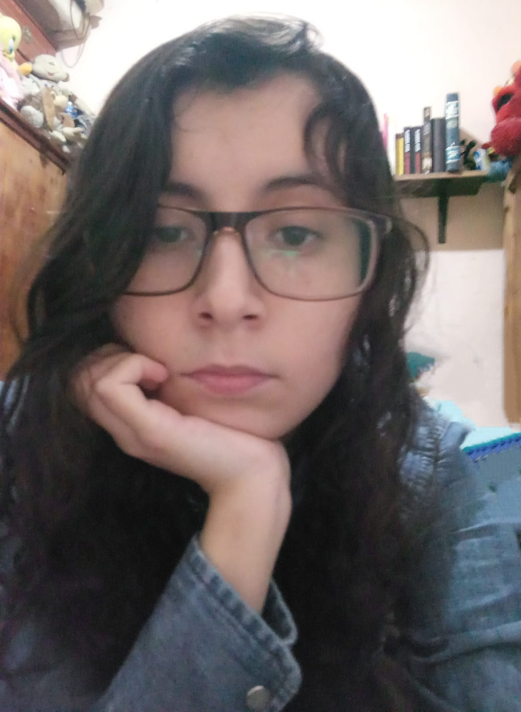

CURRÍCULUM VITAE: SELENE G. AMADOR DÍAZ

DESCRIPCIÓN PERSONAL
Soy una persona apasionada por el conocimiento. Me encanta la lógica y las disciplinas en las que se estudia y se emplea como la filosofía o, claro, la programación. Amante de la múscica, los idiomas y las novelas filosóficas o de corte social.
EDUCACIÓN
-
Facultad de Filosofía y Letras (Lengua y literatura italiana) 2013-2017
Cursé las especialidades de didáctica y de traducción.
Asistí a un curso sobre la traducción literaria del italiano al español, por el cual obtuve una constancia.
Promedio general de calificaciones: 8.9
-
Diplomado en Redacción Editorial y Cuidado de la Edición 2017-2018
En este diplomado obtuve un diploma con un puntaje sobresaliente.
-
Programación (autodidacta)
Recientemente comencé a tomar cursos en línea sobre fundamentos de programación, tengo conocimientos básicos de C++, Javascript y de POO.
EXPERIENCIA LABORAL
-
Asistente de editor en Instituto de Investigaciones Filosóficas de la UNAM 2016-2017
Experiencia aproximada de medio año en la corrección de redacción y ortografía en textos de tipo ensayístico en el Instituto de Investigaciones Filosóficas de la UNAM. Durante este lapso adquirí y puse en práctica diversos conocimientos acerca de la corrección editorial y el cuidado de la edición: el proceso que conlleva, el modo en el cual se efectúa, según la casa editorial, y los instrumentos y mecanismos que se necesitan para poder desempeñar de manera adecuada esta labor.
-
Capturista en Telemark Corporation 2017-2019
En este puesto fue un requisito indispensable poseer una excelente redacción y ortografía, puesto que dicha labor consistía en redactar respuestas a diversos clientes, tanto en español como en inglés. Seis meses después, debido al buen desempeño efectuado tanto en el procedimiento como en la redacción ascendí a un puesto cuya tarea era asesorar a los nuevos miembros de la empresa y apoyarlos revisando sus procesos, redacción y ortografía.
-
Correctora de estilo para Editorial Planeta 2020-actualidad
Actualmente trabajo como freelancer para editorial Planeta. Realizo cotejos de traducción del inglés al español y del italiano al español; hago corrección de estilo, ortotipográfica y de pruebas, y también realizo neutralizaciones (o mexicanizaciones) del español de España a un español "estándar" o más cernao al latino.
APTITUDES Y HABILIDADES
- Un deseo constante y grande de aprender y facilidad para hacerlo
- Creatividad en la resolución de problemas
- Excelente redacción y ortografía
- Excelente manejo de internet como herramienta de investigación
- Facilidad en el aprendizaje de idiomas
- Conocimiento avanzado del inglés e italiano e intermedio del francés
HOBBIES
- Escuchar y conocer nueva música
- Salir y conocer nuevos lugares
- Aprender nuevas cosas
- Leer y escribir reflexiones
- Ver películas y series
¿Por qué deseo estudiar en Henry?
Como lo mencioné al inicio, me apasiona aprender nuevas cosas y la lógica, y la programación me puede proporcionar ambas. Además, me encantaría aprender a crear páginas y aplicaciones, por el mero placer creativo. Por último, una motivación que también me empuja a estudiar en Henry es el deseo de generar un ingreso mayor al que he percibido hasta ahora. Creo que es una excelente oportunidad educativa y al final de todo laboral. Al finalizar la carrera espero poder encontrar un trabajo remoto y estable.